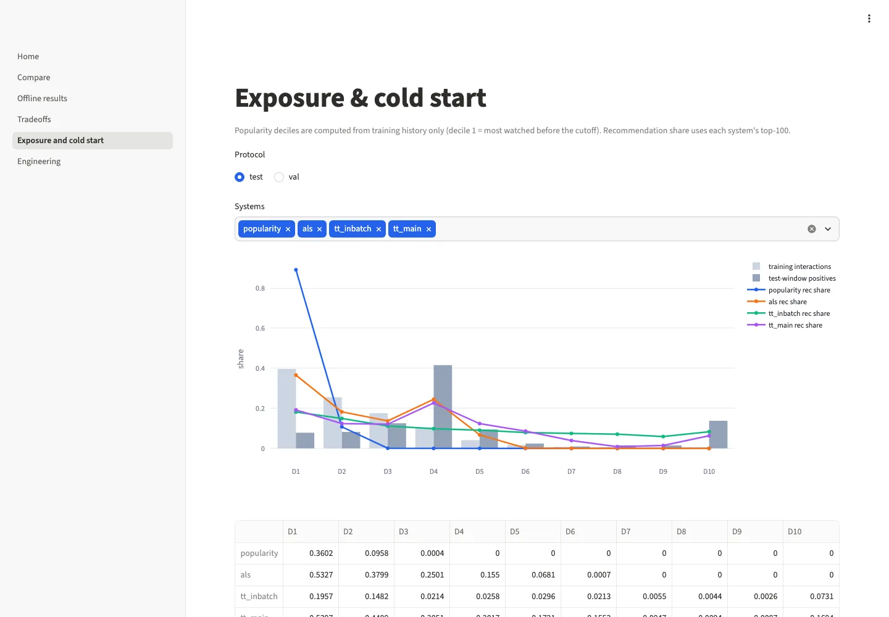
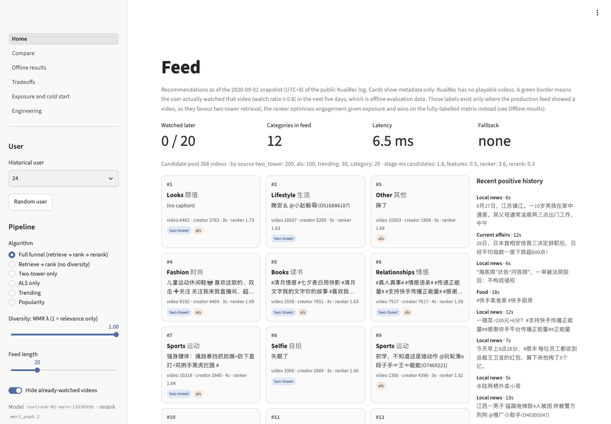

Screens
The demo app




A short-video recommender on a real public log from the Kuaishou app. Two-tower and ALS retrieval, a LightGBM ranker and a diversity reranker, evaluated without leakage and served in under 6 ms.

Recall@100 over a tuned ALS baseline on the held-out test week (0.298 vs 0.226, 95% CI excludes zero)
validation recall from correcting sampling bias per day instead of globally (0.286 vs 0.082)
real interactions between 7,176 users and 10,728 videos, after removing 968,004 duplicate rows
p95 latency for the full retrieve → rank → rerank funnel over 6,989 replayed requests
Large feed recommenders share a shape: retrieve a few hundred candidates from the catalog, rank them with a richer model, then rerank for diversity. Building that is the easy part. Measuring it honestly from a log is harder.
Three traps come with offline data. Leakage: a feature that peeks at the future inflates every number. Sampling bias: in-batch negatives over-penalise popular videos. Exposure bias: a log only has labels where the old feed chose to show something. ReelRank builds each stage, then measures what each one actually adds, with a confidence interval on every comparison.
Training stages run as separate processes and write a hash-pinned bundle. Serving loads that bundle and needs only NumPy and LightGBM.
Temporal metrics use the held-out test week and count only observed positives. Every delta has a 95% paired bootstrap interval.
Held-out week, Sep 1–5.
Same two-tower model, three corrections.
On KuaiRec's 99.6%-dense matrix, where every video was shown to every user, the LightGBM ranker adds +0.225 NDCG@20 over retrieval alone, with a 95% interval of [+0.216, +0.235].
The MMR reranker then raises category diversity from 0.797 to 0.849 while keeping NDCG@20 at 0.866.
| Funnel stage (held-out users) | NDCG@20 | Category diversity |
|---|---|---|
| Retrieval only | 0.645 | 0.797 |
| + LightGBM ranker | 0.870 | – |
| + MMR reranker (served) | 0.866 | 0.849 |
Dense-matrix evaluation on held-out users. Cold-start videos: the metadata tower reaches Recall@20 0.080, about 3× the ID-only model.
